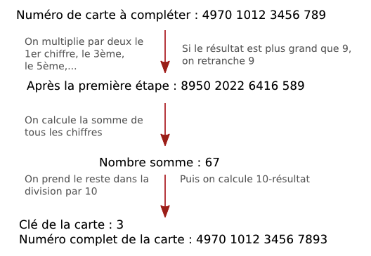
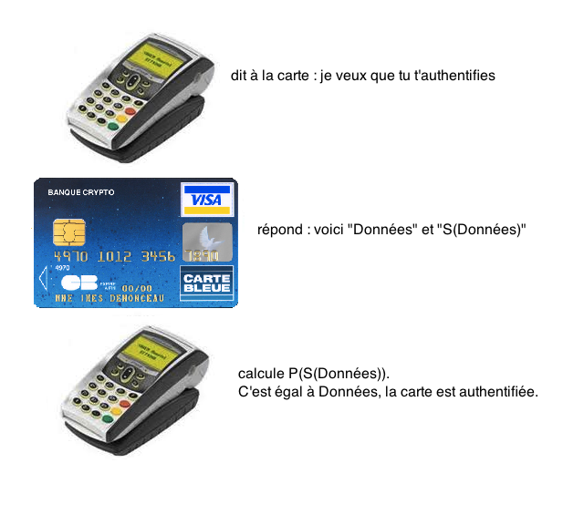
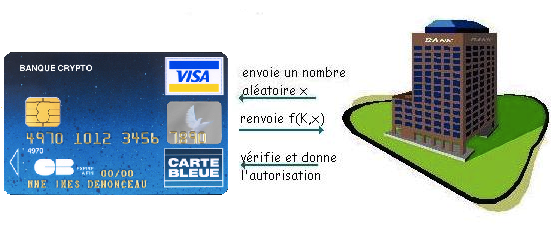

La sécurité des cartes bancaires
Lorsqu'on introduit sa carte bleue dans un distributeur automatique, on imagine assez mal tout ce qui se passe. Chacun sait qu'il faut rentrer son code secret pour pouvoir débloquer le paiement, mais ceci n'est que la face cachée de la sécurité des cartes bleues. Comment être sûr que personne ne peut fabriquer de fausse carte, prendre votre identité bancaire, et dépenser votre argent??
Le but de cette page est de vous expliquer quelques éléments de la sécurité des cartes bancaires. Le niveau de sécurité obtenu est très différent
suivant que l'on utilise un protocole sans authentification (il ne faut pas fournir le code secret, par exemple pour une commande sur un site internet,
ou à un péage d'autoroute), ou un protocole avec authentification (on doit fournir le code secret).
Une carte bancaire décortiquée...
 Une carte bancaire est constituée des éléments suivants. Au recto, on trouve :
Une carte bancaire est constituée des éléments suivants. Au recto, on trouve :
- diverses informations et sigles (nom de la banque, visa ou mastercard,…);
- le numéro de la carte bleue;
- la date d'expiration de la carte;
- le nom du propriétaire;
- la puce;
- un hologramme.
Au verso, on trouve :
- la piste magnétique;
- une fenêtre pour apposer la signature du propriétaire. Cette fenêtre comporte aussi souvent quelques chiffres, dont les derniers constituent
le cryptogramme de sécurité de la carte;
- diverses informations et sigles.
La piste magnétique et la puce ont des fonctions très différentes. La piste magnétique comporte toutes les informations qu'on peut lire en ayant la carte en mains (nom de la banque, numéro, date d'expiration,…), hormi le cryptogramme de sécurité. La puce, elle, est une sorte de petit ordinateur, avec un processeur (assez peu puissant) qui permet d'effectuer des calculs, une mémoire dont une partie est accessible en écriture (enregistrement de l'historique des transactions), une autre en lecture seule, et enfin une dernière en lecture cachée. C'est cette puce qui gère la partie "code secret" et donc authentification des paiements par carte bancaire. Grâce à son processeur, la carte à puce est particulièrement évolutive.
Les premières cartes bancaires, apparues en 1967, ne comportaient pas de puce. La carte à puce a en effet été créée par deux ingénieurs français, Roland Moreno et Michel Ugon, en 1974. Ce n'est qu'au début des années 1990 que les cartes bancaires avec puce se sont généralisées en France. Aux Etats-Unis ou au Japon, il aura fallu attendre encore dix ans.
L'hologramme de la carte bancaire joue le même rôle que les hologrammes que l'on trouve sur les billets de banque.
Il est destiné à rendre plus difficile la fabrication de fausses cartes bancaires. Pour les cartes Visa, l'hologramme est une colombe qui semble voler lorsque vous inclinez la carte. Au lieu d’un hologramme de colombe sur le recto, il se peut qu’un mini hologramme de colombe apparaisse au verso de la carte. L’hologramme MasterCard composé de deux globes représentant le monde est en trois dimensions avec une répétition de “MasterCard” imprimé en arrière-plan. Lorsqu’on le fait tourner, l’hologramme reflète la lumière et semble bouger. Un autre élément, non visible à l'oeil nu, a la même fonction. Lorsque la carte est placée sous un éclairage ultraviolet, un “V“ imprimé à l’encre ultraviolette est visible sur le logo Visa. Sur MasterCard, les initiales “MC“ sont imprimées sur le recto de la carte à l’encre ultraviolette (UV) et ne sont visibles que sous un éclairage ultraviolet.
Le numéro de carte bancaire n'est pas construit au hasard. Il comporte en général 16 chiffres,
qui ont le sens suivant :
- les six premiers chiffres identifient le type de carte ainsi que la banque qui a émis la carte. Ainsi, si les deux premiers chiffres sont 51, 52, 53, 54 ou 55,
il s'agit d'une carte Mastercard. Si le premier chiffre est un 4, il s'agit d'une carte Visa, si les deux premiers chiffres sont 34 ou 37, on a affaire
à une carte American Express. Les autres chiffres de ce premier groupe de six chiffres identifient la banque. Ainsi, un numéro de carte bancaire
commençant par 497040 désignera toujours une carte Visa émise par la Banque Postale,
un numéro commençant par 513264 une carte Mastercard émise par le Crédit Mutuel.
- les neuf chiffres suivants identifient le numéro de compte dans la banque, chaque banque ayant son propre système d'identification.
- le dernier chiffre, enfin, est la clé de Luhn. Il joue le même rôle que la clé du RIB ou du numéro INSEE. Il est
calculé à partir des autres chiffres en respectant l'algorithme suivant :

Payer sans donner son code secret
Une part très importante des paiements par carte bancaire se fait sans devoir donner le code secret de la carte.
C'est le cas par exemple lorsqu'on réalise un achat à distance (par internet, courrier ou téléphone). Le paiement se fait simplement en donnant :
- le numéro de la carte bancaire;
- le nom du porteur;
- la date de validité de la carte;
- et, depuis 2001, le cryptogramme de sécurité, trois chiffres inscrits au dos de la carte.
Ces informations sont transmises par le commerçant à la banque qui vérifie qu'elles correspondent effectivement à un client.
Evidemment, ceci apporte une sécurité plutôt faible. Si quelqu'un vous dérobe votre carte bancaire, il est en possession de tous ces éléments
et peut payer à votre place! Les choses se sont pourtant (un peu) améliorées avec le temps. Jusqu'en 2001, les facturettes de cartes bancaires
comportaient le numéro complet de la carte. Autant dire que les voleurs étaient à l'affut de ces tickets souvent jetés négligemment!
Le cryptogramme de sécurité joue aussi un rôle dans la sécurisation de ce type de transactions. Il permet de s'assurer que
la personne qui commande est effectivement en possession de la carte. En effet, contrairement aux autres données, le cryptogramme de sécurité
n'est pas stocké dans la piste magnétique de la carte bleue. Ceci permet d'éviter la fraude suivante : un commerçant indélicat pouvait capturer
les données de la carte (sauf le code secret, bien sûr), lors d'un paiement, par lecture de la piste magnétique. C'est désormais impossible, car il ne
pourra pas obtenir le cryptogramme de sécurité. Et pour les transactions en ligne, il est interdit à un commerçant de mémoriser le cryptogramme de sécurité.
Bien sûr, ceci ne signifie pas qu'aucun ne le fait!
L'algorithme pour calculer le cryptogramme de sécurité n'est pas divulgué. Selon le site officiel des cartes bancaires CB : "le cryptogramme de sécurité est calculé par les outils cryptographiques de chaque banque émettrice ; il est ensuite transmis à des ateliers de personnalisation des cartes agréés par CB et régulièrement audités. Ces ateliers possèdent un niveau de protection, tant sur le plan physique que logique, équivalent notamment à ceux qui fabriquent les billets pour la Banque de France." Tout ceci ne me semble pas répondre à des exigences de sécurité correctes. Notamment, la sécurité de l'algorithme produisant
le cryptogramme n'est pas assuré.
Signalons toutefois que, pour ces paiements sans authentification, c'est la banque qui prend les risques : elles doivent rembourser les clients
qui contestent un prélèvement de ce type, sauf bien sûr si elles arrivent à mettre en doute la bonne foi du client. Signalons aussi que le paiement par carte bleue
aux péages d'autoroute est similaire. Les informations sont lues depuis la piste magnétique de la carte au lieu d'être données par écrit. Bien sûr, le cryptogramme
de sécurité n'intervient alors pas, mais le problème de la possession physique de la carte ne se pose pas dans ce cas!
Protocole original de paiement par carte bleue
Le protocole mis au point au début des années 1990 pour le paiement par carte bancaire
à un terminal de paiement (chez un commerçant) est décrit ci-après. Il comporte plusieurs étapes.
- Authentification de la carte : lorsqu'on introduit la carte dans le terminal, il a besoin de savoir à qui elle appartient, et s'il s'agit effectivement d'une carte valide. Ceci est réalisé grâce à la cryptographie asymétrique. En effet, lors de la fabrication de la carte est inscrit sur la puce un ensemble
de données (nom, prénom, numéro, etc…). Ces données sont présentes de deux façons : d'une part, en clair, et d'autre part, sous forme chiffrée, en utilisant la clé secrète S du groupement des cartes bancaires. Ainsi, sur la carte, on trouve le couple (données, S(données)), et ce sont ces informations qui sont transmises par la carte au terminal.
Le terminal, lui, peut donc identifier la carte par la connaissance de "données". Il peut aussi vérifier que la carte est valide, car il peut calculer, en utilisant
la clé publique P du groupement des cartes bancaires, "P(S(données))" et vérifier si cela est bien égal à "données". Si c'est le cas, c'est que la carte est valide,
car personne normalement ne peut calculer "S(données)". Signalons que ceci impose des conditions de sécurité considérables pour la fabrication des cartes bleues, car
la valeur de la clé secrète S doit rester absolument secrète!

- Code confidentiel : Le client est invité à entrer son code secret sur le terminal. Celui-ci le communique (en clair!) à la puce de la carte bancaire, qui
le compare avec la valeur stockée. Si les deux valeurs coïncident, la carte retourne "OK" au terminal.
- Authentification en ligne : Cette étape n'est pas réalisée pour toutes les transactions, mais seulement pour celles dépassant un certain montant (typiquement 100 euros), et encore uniquement pour 20% d'entre elles.
Dans ce cas, le terminal interroge un centre de contrôle à distance, qui envoie à la carte une valeur aléatoire x. La carte calcule y=f(K,x), où K est une clé secrète, inscrite dans la partie illisible de la carte, et f est un algorithme de chiffrement symétrique (initialement le DES, puis le triple DES et l'AES). La valeur y est retransmise au centre, qui lui-même calcule f(K,x), et donne ou non l'autorisation. Remarquons que ceci nécessite que le centre connaisse la clé secrète de toutes les cartes.
Cette authentification hors-ligne n'est pas réalisée à chaque transaction, car elle demande un temps assez long.

L'affaire Humpich
En 1998, l'affaire Serge Humpich fait la une des journaux. Cet informaticien met en effet en évidence une faille dans le protocole décrit plus tôt. Ayant essayé de négocier, sans succès, son savoir-faire auprès du groupement des cartes bancaires, il fait une démonstration publique en achetant un carnet de tickets de métro en utilisant une carte de sa fabrication. Cela lui valut en février 2000 une condamnation à 10 mois de prison avec sursis, alors qu'il n'avait pas utilisé sa trouvaille à des fins crapuleuses.
En réalité, Humpich avait pointé du doigt deux failles dans le protocole utilisé :
- une faille logique. En effet, le couple "Données, S(Données)" était inscrit en clair sur chaque puce. Il était possible de les lire, et de les reproduire sur une autre carte bancaire. D'autre part, il était aisé de fabriquer des cartes bancaires qui, quelque soit le code secret rentré, répondait "OK" au terminal de paiement, ce que l'on appelle des "yescard". Ainsi, le terminal est abusé à la fois pour les étapes 1 et 2. On réalise ainsi un clonage de carte bancaire, et on peut donc fabriquer de fausses cartes à partir d'une carte bancaire valide.
- une faille cryptographique. L'algorithme utilisé pour le chiffrement asymétrique n'est autre que le célèbre RSA. Mais la clé utilisée en 1998 (inchangée depuis 1990) ne comportait que 320 bits. Or, en 1998, factoriser un tel entier n'était plus impossible (le record se situait à 512 bits). Humpich, en utilisant simplement un logiciel japonais de factorisation, avait réussi à découvrir la clé secrète S du groupement des cartes bancaires. Il lui devenait ainsi possible
de fabriquer de toute pièce une fausse carte bancaire, sans avoir besoin de partir des informations d'une carte bancaire valide.
Seule l'étape d'authentification en ligne résistait à la méthode de Humpich, mais celle-ci n'est utilisée en France que pour une minorité de transactions.
Nouveau protocole de paiement par cartes bancaires
Le groupement des cartes bancaires a retenu ses erreurs et a apporté plusieurs réponses. Les premières étaient purement matérielles : augmentation de la taille de la clé secrète, changement de l'algorithme de chiffrement utilisé dans la méthode d'authentification en ligne pour un algorithme plus sûr. Les secondes furent plus profondes, et concernent le protocole lui-même.
En réalité, la sécurité du protocole original reposait aussi d'une part sur son caractère secret et d'autre part sur l'impossibilité de créer une réplique de la carte. Mais ces deux piliers se sont écroulés, le premier par rétro-ingénierie d'un terminal bancaire, le second par la mise sur le marché d'outils grand public de
programmation de cartes à puces. Ainsi, le groupement EMVCo, regroupant Europay, MasterCard et Visa, a publié les spécifications détaillées du successeur du protocole de paiement, baptisé EMV. Il comporte plusieurs sous-protocoles, nous n'en détaillons qu'un, DDA, pour Dynamic Data Authentification, dans une version simplifiée. Afin de garantir une authentification plus sûre que le protocole précédent, il utilise la notion de challenge.
Le protocole DDA met en jeu un autre couple de clés secrètes/clés publiques, spécifiques à chaque carte. On notera la clé secrète
de la carte Scarte et sa clé publique Pcarte. Sur la partie en lecture publique de la carte, on trouve désormais les informations suivantes : données, S(données),
et S(Pcarte). Sur la partie en lecture cachée de la carte, en théorie inacessible, on trouve Scarte. Le protocole d'authentification hors-ligne
est un peu plus long :
- la carte commence par envoyer ses informations publiques, données, S(données),
et S(Pcarte)
- le terminal calcule PS(données) et vérifie si ceci est égal à données.
Il calcule aussi PS(Pcarte)=Pcarte; il est donc en possession de la clé publique de la carte.
- le terminal envoie un nombre au hasard N à la carte (c'est le challenge).
- la carte renvoie Scarte(N)=M.
- le terminal calcule Pcarte(M). S'il trouve N, c'est que la carte a bien envoyé Scarte(N), information qu'elle est
la seule à posséder. Le challenge est rempli, la carte est authentifiée.
Ici, il n'est plus possible de cloner une carte bancaire, car on n'a plus accès à Scarte. Le protocole DDA répare donc la faille logique
du protocole initial. De plus, il améliore aussi la phase "authentification du possesseur de la carte". En effet, le terminal ne communique plus à la carte
directement le code secret entré par le client, mais l'information Pcarte(code). Avec sa clé secrète, la carte, et elle seule, peut retrouver le code. Ainsi, le code
secret circule désormais sous forme chiffrée entre le terminal et la carte et ne peut plus être "espionnée".
Remarquons que ce protocole DDA utilise toute la souplesse des cartes à puce. En effet, celles-ci doivent pouvoir effectuer des calculs RSA. On a donc bien besoin d'une puce et de son micro-processeur!
3D Secure et e-carte bleue
Pour renforcer la sécurité des transactions électroniques, deux nouveaux outils ont été créés par les banques. Le premier est le programme 3D Secure, connu pour les cartes Visa sous le nom "Verified by Visa" et pour les cartes Mastercard sous le nom "Mastercard Secure Code". Il ajoute une étape supplémentaire
au paiement, pour garantir une meilleure authentification de la carte. Concrètement, après avoir entré les informations usuelles (numéro de carte, etc…) sur le site
du marchand, le client est renvoyé vers le site de sa banque. Il doit, pour finaliser la transaction, y entrer un code d'authentification à usage unique. Les banques utilisent des méthodes différentes pour communiquer ce code : cela peut être par l'envoi d'un SMS sur le téléphone portable du client, ou à l'aide d'un petit boitier dans lequel on insère sa carte bleue et qui demande le code de la carte bleue pour donner le code d'authentification. Le but ici est d'éviter qu'une carte bancaire subtilisée ne soit
utilisée pour un paiement sur internet.
Le second outil, le programme e-carte bleue a un but un peu différent. Il évite de communiquer directement numéro de carte bancaire, date d'expiration, et cryptogramme sur le réseau. Par l'intermédiaire d'un petit programme résidant dans l'ordinateur, la banque fournit, en temps réel, un numéro de carte, une date d'expiration
et un cryptogramme valides uniquement pour cette transaction.
Consulter aussi